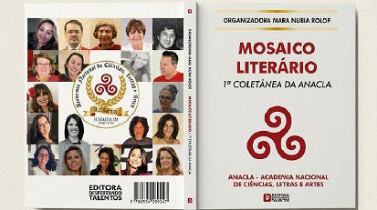
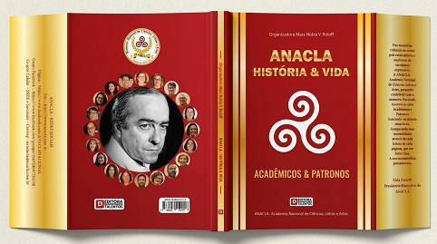

Saberes e criações

ANACLA – Mosaico Literário constitui um marco inaugural na trajetória editorial da Academia Nacional de Ciências, Letras e Artes — ANACLA, lançado em julho de 2019, por ocasião do primeiro aniversário de fundação da instituição.
A coletânea consagra a expressão literária de seus integrantes, reunindo diferentes vozes e sensibilidades em uma obra que enaltece a pluralidade da criação intelectual e reafirma o compromisso da Academia com a valorização das letras, das artes e da cultura.
Seu lançamento, realizado em 18 de julho de 2019, no espaço cultural da Assembleia Legislativa do Estado de Santa Catarina, em Florianópolis, reuniu representantes da instituição, artistas, literatos e convidados, em uma solenidade enriquecida por manifestações culturais.
Mais do que uma publicação, ANACLA – Mosaico Literário representa o testemunho de uma etapa significativa da história institucional da ANACLA, perpetuando a produção de seus autores e consolidando o propósito de preservar, promover e transmitir às futuras gerações o patrimônio literário e cultural.

ANACLA – História & Vida constitui uma importante obra de registro e preservação da memória institucional da Academia Nacional de Ciências, Letras e Artes — ANACLA.
A publicação reúne aspectos da trajetória da instituição, seus principais momentos e acontecimentos, documentando parte significativa de sua construção e atuação no campo das ciências, das letras e das artes.
Mais do que reunir informações históricas, a obra representa um instrumento de preservação da identidade institucional, permitindo que diferentes gerações conheçam a caminhada da Academia, seus integrantes e sua contribuição para a cultura.
ANACLA – História & Vida integra, assim, o patrimônio documental da instituição, perpetuando registros que ajudam a compreender sua trajetória e fortalecendo o compromisso da Academia com a memória, a cultura e a valorização de sua própria história.
A ANACLA está sempre trabalhando em novas publicações. Fique atento às nossas redes sociais e ao site para acompanhar o lançamento de novas obras.
Acompanhe as novidades